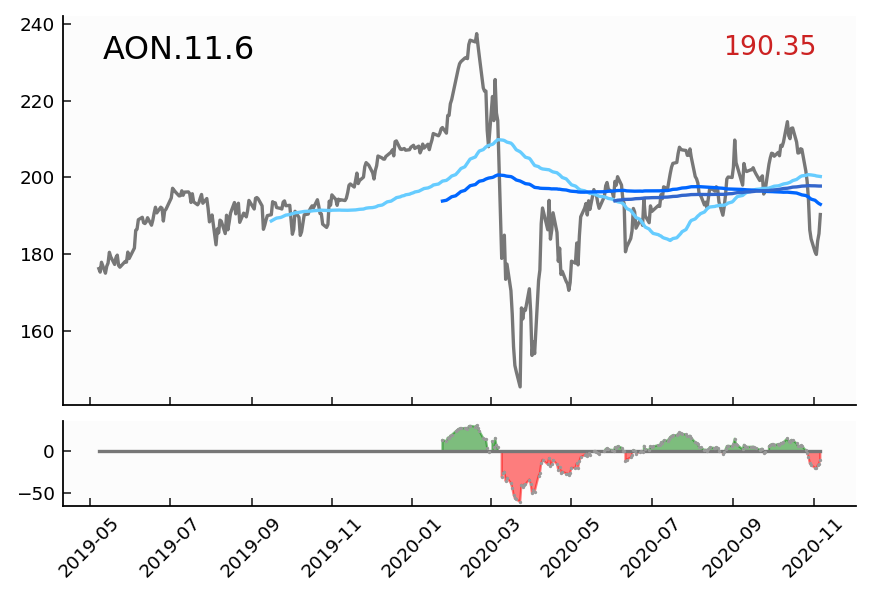
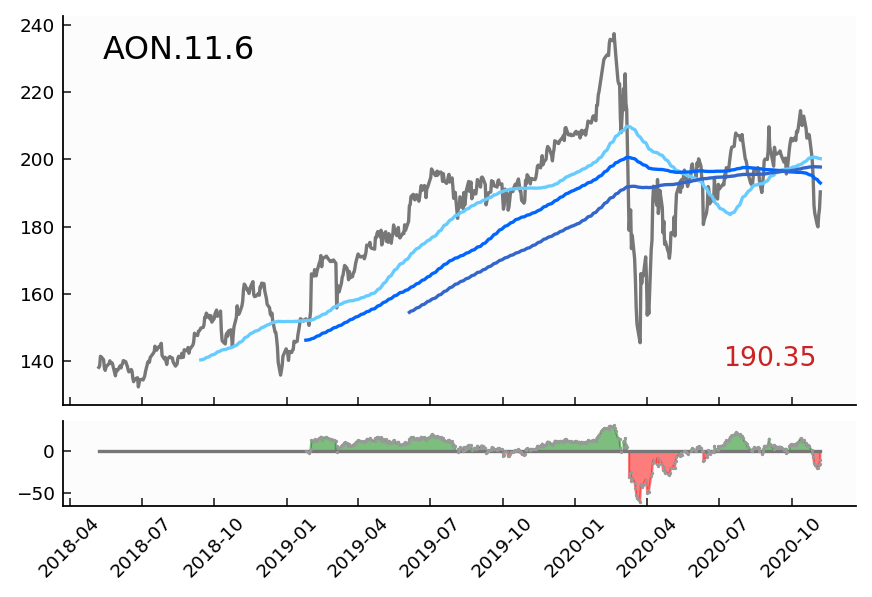
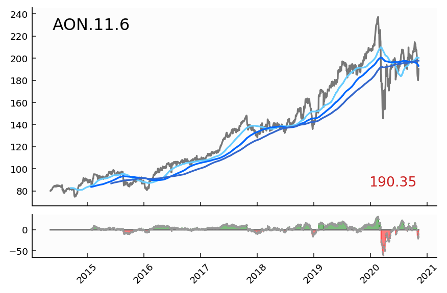

<html>
<head>
<script>
function show(shown, hidden) {
	document.getElementById(shown).style.display='block';
	document.getElementById(hidden).style.display='none';
	return false;
}
</script>
<script src='https://ajax.googleapis.com/ajax/libs/jquery/1.12.4/jquery.min.js'></script>
<script src='https://maxcdn.bootstrapcdn.com/bootstrap/3.3.7/js/bootstrap.min.js'></script>
<link rel=stylesheet href='https://maxcdn.bootstrapcdn.com/bootstrap/3.3.7/css/bootstrap.min.css' ><link rel=stylesheet href="./seer.css" >
<style> .carousel img { width: 70%; margin: auto;} </style>
</head>
<body bgcolor="black"/><div id="myCarousel" class="carousel slide" data-ride="carousel" data-interval="16000">
<ol class="carousel-indicators">
<li data-target="#myCarousel" data-slide-to="0" class="active"></li>
<li data-target="#myCarousel" data-slide-to="1"></li>
</ol>

  <div class="carousel-inner">
    <div class="item active">
      
    </div>
    <div class="item">
      
    </div>
    <div class="item">
      
    </div>
  </div>
<a class="left carousel-control" href="#myCarousel" data-slide="prev">
  <span class="glyphicon glyphicon-chevron-left"></span>
  <span class="sr-only">Previous</span>
</a>
<a class="right carousel-control" href="#myCarousel" data-slide="next">
  <span class="glyphicon glyphicon-chevron-right"></span>
  <span class="sr-only">Next</span>
</a>
</div>
</body>
</html>
